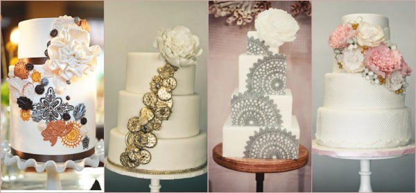

1. Budget
Set a budget straight from the beginning and be open with your cake decorator. It will make the process much easier and smoother for both parties.
2. Theme of the cake
When meeting your cake decorator for the first time, bring as much information as possible; theme of the wedding, colour of your dress, bridesmaid dress and inspiration from the room and flowers. It will make the selection easier.
3. Flavour of the cake
It doesn’t have to be a traditional fruit or sponge cake. Be inspired; go for chocolate, red velvet or carrot cake and mix the layers. Make sure you taste them. Remeber it must taste as good as it looks.
4. Delivery and setting up of the wedding cake
Before confirming your order, find out who will deliver your cake on the day and more importantly who will set it up. Too many brides forget about this.
5. Serving your wedding cake as a dessert
Why not save money and let your guests enjoy your delicious cake by serving it as a dessert, instead of waiting till late in the evening when people are too busy partying.
Home